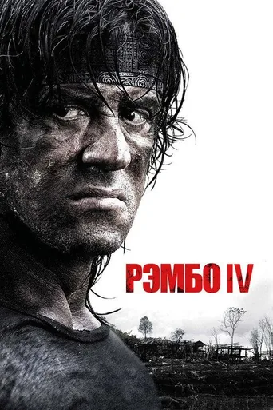

Рэмбо IV 2008
Джон Рэмбо ведёт уединённый образ жизни в небольшой деревушке в Таиланде. Уставший от войны и кровопролития, избегая проблем, он живёт мирной жизнью, занимаясь отловом и продажей змей. Однажды к нему обращаются американские миссионеры с просьбой отвезти их на лодке в Бирму для помощи каренскому народу, против которого не один год ведётся геноцид. Поначалу Джон отказывается, поскольку в стране бушует гражданская война, но в итоге нехотя соглашается и отвозит группу до пункта назначения. Позже миссионеры попадают в плен к бирманским военным, которые жестоко уничтожают местных каренов. Узнав об этом, Рэмбо присоединяется к отряду наёмников, которым поручено освободить пленников.
Открыть в каталогеДанные и постеры принадлежат их правообладателям. Этот продукт использует TMDB API, но не одобрен и не сертифицирован TMDB.